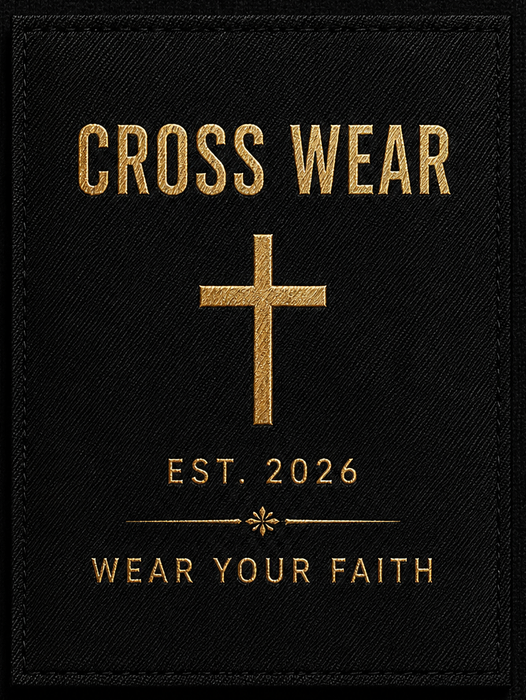
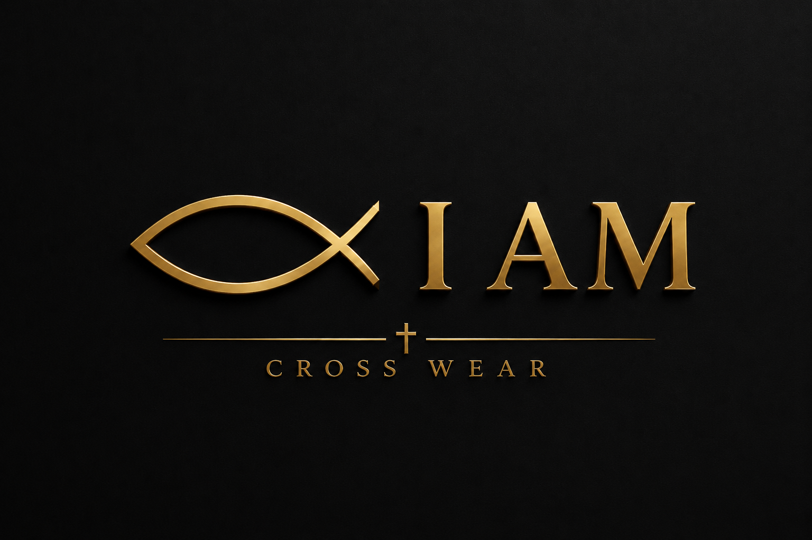

Wear Your Faith
Jesus Cross Wear is a Canadian faith-based clothing brand built in Thompson, Manitoba for people who want scripture, conviction, and everyday style to move together.
Our work is simple: create clean, meaningful apparel that lets you carry your faith with confidence wherever the day takes you.

Manufactured in Ontario with Canadian apparel expertise.
Our high quality clothing is manufactured through ******* Clothing in Ontario, a Canadian apparel manufacturer based in Toronto.
Scripture-led clothing made to be worn.
Each piece is designed around a clear message of faith, from verse-based graphics to embroidered details. The tag carries the heart of the brand: Wear Your Faith.
We focus on apparel that feels substantial, clean, and intentional, so the message looks as strong as it reads.

A faith brand with a meaningful message to bring to the world.
We believe the right message on our clothing will be in the right place at the right time to subtly inspire and encourage those who see it.